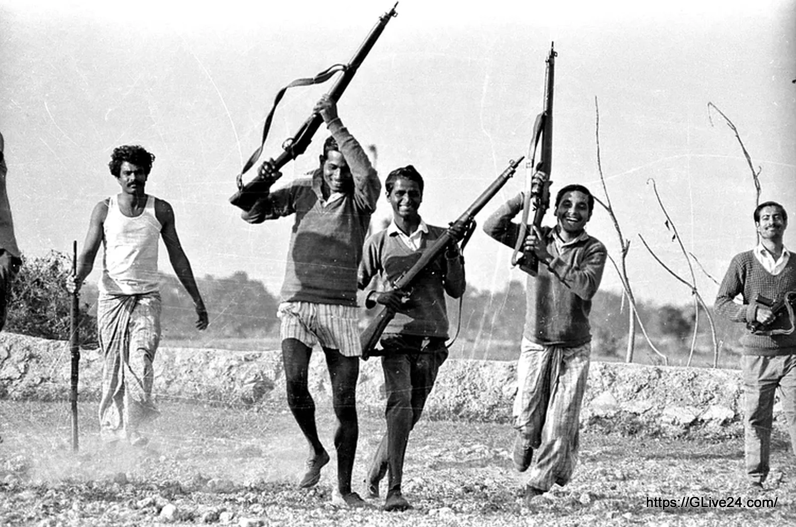
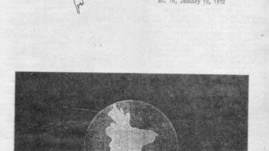
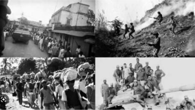

Featured Photographs



The Liberation War Archive is a digital platform dedicated to preserving the history, memories, and sacrifices of the Bangladesh Liberation War of 1971. This archive serves as a trusted source of historical documents, personal testimonies, photographs, and recorded interviews that reflect the struggle of the Bengali people for independence and national identity.
The Liberation War holds immense significance in the history of Bangladesh, as it marked the birth of the nation after a long struggle against oppression, injustice, and discrimination. Millions of people sacrificed their lives, homes, and families during the war to achieve freedom and sovereignty. Preserving these stories and historical records is essential for educating future generations about the courage, resilience, and patriotism of the people who fought for independence.
Through this archive, users can explore important historical documents, listen to the experiences of freedom fighters and survivors, and view rare photographs capturing key moments of the war. The platform aims to ensure that the memories of the Liberation War remain alive and accessible for research, education, and national remembrance

Bangladesh NewsLetter 1971 Publisher: Bangladesh League of America / Bangladesh Defence League Bangladesh NewsLetter was a newsletter published by Bengali…
February 17, 1972
Read More
Losses suffered in War: Estimates collected from various sources indicate that Pakistan had committed 365,000 officers and men into the…
September 20, 2011
Read More